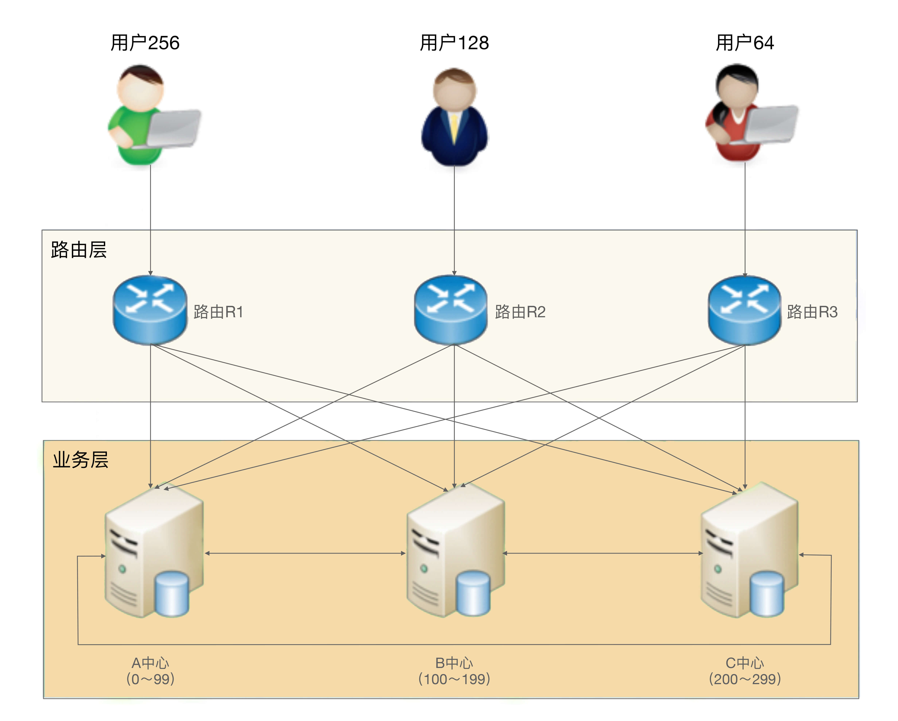
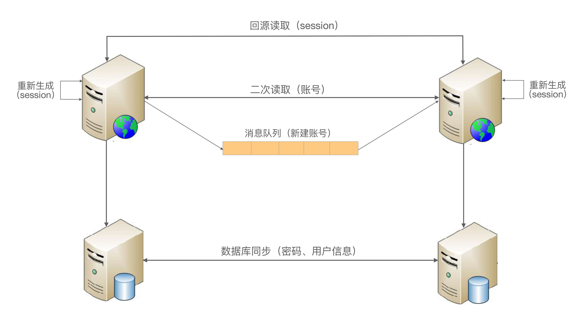

- 00 开篇词 照着做，你也能成为架构师！.md
- 01 架构到底是指什么？.md
- 02 架构设计的历史背景.md
- 03 架构设计的目的.md
- 04 复杂度来源：高性能.md
- 05 复杂度来源：高可用.md
- 06 复杂度来源：可扩展性.md
- 07 复杂度来源：低成本、安全、规模.md
- 08 架构设计三原则.md
- 09 架构设计原则案例.md
- 10 架构设计流程：识别复杂度.md
- 11 架构设计流程：设计备选方案.md
- 12 架构设计流程：评估和选择备选方案.md
- 13 架构设计流程：详细方案设计.md
- 14 高性能数据库集群：读写分离.md
- 15 高性能数据库集群：分库分表.md
- 16 高性能NoSQL.md
- 17 高性能缓存架构.md
- 18 单服务器高性能模式：PPC与TPC.md
- 19 单服务器高性能模式：Reactor与Proactor.md
- 20 高性能负载均衡：分类及架构.md
- 21 高性能负载均衡：算法.md
- 22 想成为架构师，你必须知道CAP理论.md
- 23 想成为架构师，你必须掌握的CAP细节.md
- 24 FMEA方法，排除架构可用性隐患的利器.md
- 25 高可用存储架构：双机架构.md
- 26 高可用存储架构：集群和分区.md
- 27 如何设计计算高可用架构？.md
- 28 业务高可用的保障：异地多活架构.md
- 29 异地多活设计4大技巧.md
- 30 异地多活设计4步走.md
- 31 如何应对接口级的故障？.md
- 32 可扩展架构的基本思想和模式.md
- 33 传统的可扩展架构模式：分层架构和SOA.md
- 34 深入理解微服务架构：银弹 or 焦油坑？.md
- 35 微服务架构最佳实践 - 方法篇.md
- 36 微服务架构最佳实践 - 基础设施篇.md
- 37 微内核架构详解.md
- 38 架构师应该如何判断技术演进的方向？.md
- 39 互联网技术演进的模式.md
- 40 互联网架构模板：存储层技术.md
- 41 互联网架构模板：开发层和服务层技术.md
- 42 互联网架构模板：网络层技术.md
- 43 互联网架构模板：用户层和业务层技术.md
- 44 互联网架构模板：平台技术.md
- 45 架构重构内功心法第一式：有的放矢.md
- 46 架构重构内功心法第二式：合纵连横.md
- 47 架构重构内功心法第三式：运筹帷幄.md
- 48 再谈开源项目：如何选择、使用以及二次开发？.md
- 49 谈谈App架构的演进.md
- 50 架构实战：架构设计文档模板.md
- 51 如何画出优秀的软件系统架构图？.md
- 加餐｜业务架构实战营开营了.md
- 加餐｜单服务器高性能模式性能对比.md
- 加餐｜扒一扒中台皇帝的外衣.md
- 如何高效地学习开源项目 华仔，放学别走！ 第3期.md
- 新书首发 《从零开始学架构》.md
- 架构专栏特别放送 华仔，放学别走！ 第2期.md
- 架构专栏特别放送 华仔，放学别走！第1期.md
- 架构师必读书单 华仔，放学别走！ 第5期.md
- 架构师成长之路 华仔，放学别走！ 第4期.md
- 结束语 坚持，成就你的技术梦想.md
29 异地多活设计4大技巧
专栏上一期我介绍了三种不同类型的异地多活架构，复习一下每个架构的关键点：
- 同城异区
关键在于搭建高速网络将两个机房连接起来，达到近似一个本地机房的效果。架构设计上可以将两个机房当作本地机房来设计，无须额外考虑。
- 跨城异地
关键在于数据不一致的情况下，业务不受影响或者影响很小，这从逻辑的角度上来说其实是矛盾的，架构设计的主要目的就是为了解决这个矛盾。
- 跨国异地
主要是面向不同地区用户提供业务，或者提供只读业务，对架构设计要求不高。
基于这个分析，跨城异地多活是架构设计复杂度最高的一种，接下来我将介绍跨城异地多活架构设计的一些技巧和步骤，今天我们先来看4大技巧，掌握这些技巧可以说是完成好设计步骤的前提。
技巧1：保证核心业务的异地多活
“异地多活”是为了保证业务的高可用，但很多架构师在考虑这个“业务”时，会不自觉地陷入一个思维误区：我要保证所有业务都能“异地多活”！
假设我们需要做一个“用户子系统”，这个子系统负责“注册”“登录”“用户信息”三个业务。为了支持海量用户，我们设计了一个“用户分区”的架构，即正常情况下用户属于某个主分区，每个分区都有其他数据的备份，用户用邮箱或者手机号注册，路由层拿到邮箱或者手机号后，通过Hash计算属于哪个中心，然后请求对应的业务中心。基本的架构如下：

这样一个系统，如果3个业务要同时实现异地多活，会发现这些难以解决的问题：
- 注册问题
A中心注册了用户，数据还未同步到B中心，此时A中心宕机，为了支持注册业务多活，可以挑选B中心让用户去重新注册。看起来很容易就支持多活了，但仔细思考一下会发现这样做会有问题：一个手机号只能注册一个账号，A中心的数据没有同步过来，B中心无法判断这个手机号是否重复，如果B中心让用户注册，后来A中心恢复了，发现数据有冲突，怎么解决？实际上是无法解决的，因为同一个手机号注册的账号不能以后一次注册为准；而如果B中心不支持本来属于A中心的业务进行注册，注册业务的多活又成了空谈。
如果我们修改业务规则，允许一个手机号注册多个账号不就可以了吗？
这样做是不可行的，类似一个手机号只能注册一个账号这种规则，是核心业务规则，修改核心业务规则的代价非常大，几乎所有的业务都要重新设计，为了架构设计去改变业务规则（而且是这么核心的业务规则）是得不偿失的。
- 用户信息问题
用户信息的修改和注册有类似的问题，即A、B两个中心在异常的情况下都修改了用户信息，如何处理冲突？
由于用户信息并没有账号那么关键，一种简单的处理方式是按照时间合并，即最后修改的生效。业务逻辑上没问题，但实际操作也有一个很关键的“坑”：怎么保证多个中心所有机器时间绝对一致？在异地多中心的网络下，这个是无法保证的，即使有时间同步也无法完全保证，只要两个中心的时间误差超过1秒，数据就可能出现混乱，即先修改的反而生效。
还有一种方式是生成全局唯一递增ID，这个方案的成本很高，因为这个全局唯一递增ID的系统本身又要考虑异地多活，同样涉及数据一致性和冲突的问题。
综合上面的简单分析可以发现，如果“注册”“登录”“用户信息”全部都要支持异地多活，实际上是挺难的，有的问题甚至是无解的。那这种情况下我们应该如何考虑“异地多活”的架构设计呢？答案其实很简单：优先实现核心业务的异地多活架构！
对于这个模拟案例来说，“登录”才是最核心的业务，“注册”和“用户信息”虽然也是主要业务，但并不一定要实现异地多活，主要原因在于业务影响不同。对于一个日活1000万的业务来说，每天注册用户可能是几万，修改用户信息的可能还不到1万，但登录用户是1000万，很明显我们应该保证登录的异地多活。
对于新用户来说，注册不了的影响并不明显，因为他还没有真正开始使用业务。用户信息修改也类似，暂时修改不了用户信息，对于其业务不会有很大影响。而如果有几百万用户登录不了，就相当于几百万用户无法使用业务，对业务的影响就非常大了：公司的客服热线很快就被打爆，微博、微信上到处都在传业务宕机，论坛里面到处是抱怨的用户，那就是互联网大事件了！
而登录实现“异地多活”恰恰是最简单的，因为每个中心都有所有用户的账号和密码信息，用户在哪个中心都可以登录。用户在A中心登录，A中心宕机后，用户到B中心重新登录即可。
如果某个用户在A中心修改了密码，此时数据还没有同步到B中心，用户到B中心登录是无法登录的，这个怎么处理？这个问题其实就涉及另外一个设计技巧了，我卖个关子稍后再谈。
技巧2：保证核心数据最终一致性
异地多活本质上是通过异地的数据冗余，来保证在极端异常的情况下业务也能够正常提供给用户，因此数据同步是异地多活架构设计的核心。但大部分架构师在考虑数据同步方案时，会不知不觉地陷入完美主义误区：我要所有数据都实时同步！
数据冗余是要将数据从A地同步到B地，从业务的角度来看是越快越好，最好和本地机房一样的速度最好。但让人头疼的问题正在这里：异地多活理论上就不可能很快，因为这是物理定律决定的（我在上一期已有说明）。
因此异地多活架构面临一个无法彻底解决的矛盾：业务上要求数据快速同步，物理上正好做不到数据快速同步，因此所有数据都实时同步，实际上是一个无法达到的目标。
既然是无法彻底解决的矛盾，那就只能想办法尽量减少影响。有几种方法可以参考：
- 尽量减少异地多活机房的距离，搭建高速网络
这和我上一期讲到的同城异区架构类似，但搭建跨城异地的高速网络成本远远超过同城异区的高速网络，成本巨大，一般只有巨头公司才能承担。
- 尽量减少数据同步，只同步核心业务相关的数据
简单来说就是不重要的数据不同步，同步后没用的数据不同步，只同步核心业务相关的数据。
以前面的“用户子系统”为例，用户登录所产生的token或者session信息，数据量很大，但其实并不需要同步到其他业务中心，因为这些数据丢失后重新登录就可以再次获取了。
这时你可能会想到：这些数据丢失后要求用户重新登录，影响用户体验！
确实如此，毕竟需要用户重新输入账户和密码信息，或者至少要弹出登录界面让用户点击一次，但相比为了同步所有数据带来的代价，这个影响完全可以接受。为什么这么说呢，还是卖个关子我会在后面分析。
- 保证最终一致性，不保证实时一致性
最终一致性就是[专栏第23期]在介绍CAP理论时提到的BASE理论，即业务不依赖数据同步的实时性，只要数据最终能一致即可。例如，A机房注册了一个用户，业务上不要求能够在50毫秒内就同步到所有机房，正常情况下要求5分钟同步到所有机房即可，异常情况下甚至可以允许1小时或者1天后能够一致。
最终一致性在具体实现时，还需要根据不同的数据特征，进行差异化的处理，以满足业务需要。例如，对“账号”信息来说，如果在A机房新注册的用户5分钟内正好跑到B机房了，此时B机房还没有这个用户的信息，为了保证业务的正确，B机房就需要根据路由规则到A机房请求数据。
而对“用户信息”来说，5分钟后同步也没有问题，也不需要采取其他措施来弥补，但还是会影响用户体验，即用户看到了旧的用户信息，这个问题怎么解决呢？好像又是一个解决不了的问题，和前面我留下的两个问题一起，在最后我来给出答案。
技巧3：采用多种手段同步数据
数据同步是异地多活架构设计的核心，幸运的是基本上存储系统本身都会有同步的功能。例如，MySQL的主备复制、Redis的Cluster功能、Elasticsearch的集群功能。这些系统本身的同步功能已经比较强大，能够直接拿来就用，但这也无形中将我们引入了一个思维误区：只使用存储系统的同步功能！
既然说存储系统本身就有同步功能，而且同步功能还很强大，为何说只使用存储系统是一个思维误区呢？因为虽然绝大部分场景下，存储系统本身的同步功能基本上也够用了，但在某些比较极端的情况下，存储系统本身的同步功能可能难以满足业务需求。
以MySQL为例，MySQL 5.1版本的复制是单线程的复制，在网络抖动或者大量数据同步时，经常发生延迟较长的问题，短则延迟十几秒，长则可能达到十几分钟。而且即使我们通过监控的手段知道了MySQL同步时延较长，也难以采取什么措施，只能干等。
Redis又是另外一个问题，Redis 3.0之前没有Cluster功能，只有主从复制功能，而为了设计上的简单，Redis 2.8之前的版本，主从复制有一个比较大的隐患：从机宕机或者和主机断开连接都需要重新连接主机，重新连接主机都会触发全量的主从复制。这时主机会生成内存快照，主机依然可以对外提供服务，但是作为读的从机，就无法提供对外服务了，如果数据量大，恢复的时间会相当长。
综合上面的案例可以看出，存储系统本身自带的同步功能，在某些场景下是无法满足业务需要的。尤其是异地多机房这种部署，各种各样的异常情况都可能出现，当我们只考虑存储系统本身的同步功能时，就会发现无法做到真正的异地多活。
解决的方案就是拓开思路，避免只使用存储系统的同步功能，可以将多种手段配合存储系统的同步来使用，甚至可以不采用存储系统的同步方案，改用自己的同步方案。
还是以前面的“用户子系统”为例，我们可以采用如下几种方式同步数据：
- 消息队列方式
对于账号数据，由于账号只会创建，不会修改和删除（假设我们不提供删除功能），我们可以将账号数据通过消息队列同步到其他业务中心。
- 二次读取方式
某些情况下可能出现消息队列同步也延迟了，用户在A中心注册，然后访问B中心的业务，此时B中心本地拿不到用户的账号数据。为了解决这个问题，B中心在读取本地数据失败时，可以根据路由规则，再去A中心访问一次（这就是所谓的二次读取，第一次读取本地，本地失败后第二次读取对端），这样就能够解决异常情况下同步延迟的问题。
- 存储系统同步方式
对于密码数据，由于用户改密码频率较低，而且用户不可能在1秒内连续改多次密码，所以通过数据库的同步机制将数据复制到其他业务中心即可，用户信息数据和密码类似。
- 回源读取方式
对于登录的session数据，由于数据量很大，我们可以不同步数据；但当用户在A中心登录后，然后又在B中心登录，B中心拿到用户上传的session id后，根据路由判断session属于A中心，直接去A中心请求session数据即可；反之亦然，A中心也可以到B中心去获取session数据。
- 重新生成数据方式
对于“回源读取”场景，如果异常情况下，A中心宕机了，B中心请求session数据失败，此时就只能登录失败，让用户重新在B中心登录，生成新的session数据。
注意：以上方案仅仅是示意，实际的设计方案要比这个复杂一些，还有很多细节要考虑。
综合上述的各种措施，最后“用户子系统”同步方式整体如下：

技巧4：只保证绝大部分用户的异地多活
前面我在给出每个思维误区对应的解决方案时，留下了几个小尾巴：某些场景下我们无法保证100%的业务可用性，总是会有一定的损失。例如，密码不同步导致无法登录、用户信息不同步导致用户看到旧的信息等，这个问题怎么解决呢？
其实这个问题涉及异地多活架构设计中一个典型的思维误区：我要保证业务100%可用！但极端情况下就是会丢一部分数据，就是会有一部分数据不能同步，有没有什么巧妙能做到100%可用呢？
很遗憾，答案是没有！异地多活也无法保证100%的业务可用，这是由物理规律决定的，光速和网络的传播速度、硬盘的读写速度、极端异常情况的不可控等，都是无法100%解决的。所以针对这个思维误区，我的答案是“忍”！也就是说我们要忍受这一小部分用户或者业务上的损失，否则本来想为了保证最后的0.01%的用户的可用性，做一个完美方案，结果却发现99.99%的用户都保证不了了。
对于某些实时强一致性的业务，实际上受影响的用户会更多，甚至可能达到1/3的用户。以银行转账这个业务为例，假设小明在北京XX银行开了账号，如果小明要转账，一定要北京的银行业务中心才可用，否则就不允许小明自己转账。如果不这样的话，假设在北京和上海两个业务中心实现了实时转账的异地多活，某些异常情况下就可能出现小明只有1万元存款，他在北京转给了张三1万元，然后又到上海转给了李四1万元，两次转账都成功了。这种漏洞如果被人利用，后果不堪设想。
当然，针对银行转账这个业务，虽然无法做到“实时转账”的异地多活，但可以通过特殊的业务手段让转账业务也能实现异地多活。例如，转账业务除了“实时转账”外，还提供“转账申请”业务，即小明在上海业务中心提交转账请求，但上海的业务中心并不立即转账，而是记录这个转账请求，然后后台异步发起真正的转账操作，如果此时北京业务中心不可用，转账请求就可以继续等待重试；假设等待2个小时后北京业务中心恢复了，此时上海业务中心去请求转账，发现余额不够，这个转账请求就失败了。小明再登录上来就会看到转账申请失败，原因是“余额不足”。
不过需要注意的是“转账申请”的这种方式虽然有助于实现异地多活，但其实还是牺牲了用户体验的，对于小明来说，本来一次操作的事情，需要分为两次：一次提交转账申请，另外一次是要确认是否转账成功。
虽然我们无法做到100%可用性，但并不意味着我们什么都不能做，为了让用户心里更好受一些，我们可以采取一些措施进行安抚或者补偿，例如：
- 挂公告
说明现在有问题和基本的问题原因，如果不明确原因或者不方便说出原因，可以发布“技术哥哥正在紧急处理”这类比较轻松和有趣的公告。
- 事后对用户进行补偿
例如，送一些业务上可用的代金券、小礼包等，减少用户的抱怨。
- 补充体验
对于为了做异地多活而带来的体验损失，可以想一些方法减少或者规避。以“转账申请”为例，为了让用户不用确认转账申请是否成功，我们可以在转账成功或者失败后直接给用户发个短信，告诉他转账结果，这样用户就不用时不时地登录系统来确认转账是否成功了。
核心思想
异地多活设计的理念可以总结为一句话：采用多种手段，保证绝大部分用户的核心业务异地多活！
小结
今天我为你讲了异地多活的设计技巧，这些技巧是结合CAP、BASE等理论，以及我在具体业务实践的经验和思考总结出来的，希望对你有所帮助。
这就是今天的全部内容，留一道思考题给你吧，异地多活的4大技巧需要结合业务进行分析取舍，这样没法通用，如果底层存储采用OceanBase这种分布式强一致性的数据存储系统，是否就可以做到和业务无关的异地多活？
© 2019 - 2023 Liangliang Lee. Powered by Vert.x and hexo-theme-book.